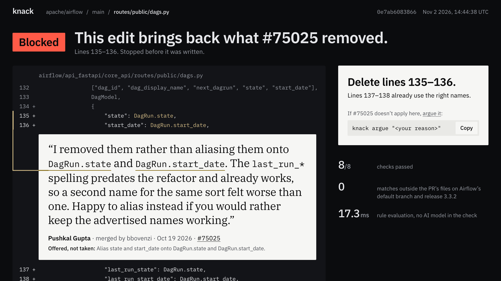

Your AI agent never read the PR where you said no. Knack did.

0e7ab6083866, as knack console serves it from the committed receipts of the live run on Nov 2 2026. Its 8/8 checks and 0 false alarms (0 matches on Airflow’s default branch and on release 3.3.2) are the #75025 row of bench/PROOF-GRID.md, which bash scripts/reproduce.sh regenerates byte for byte.From a pull request to a stopped edit
Knack blocks AI coding agents from edits that contradict a team’s recorded decisions, and cites who decided, why, and the verbatim source.
-
Spark reads the pull requests.
Muse Spark reads a repository’s merged PRs. It extracts each decision, the alternative the team rejected, who decided, and the verbatim quote, then compiles the decision into an ast-grep rule.
-
Spark Open tries to break the rule.
Muse Spark Open writes code that breaks the decision and code that follows it, which Spark never sees. A rule is installed only if it catches at least 2 of 3 violating variants and allows all 3 compliant ones.
-
Plain code stops the edit.
At edit time a PreToolUse hook runs ast-grep, with no model and no network. Only a decision a person confirmed can block, and the deny cites who decided, why, and the verbatim quote.
Meta’s models, and their jobs
The models are in the proof loop: they extract, compile and attack rules before install. They are not in the verdict path.
| Model | Runs at | Its job | In the live run |
|---|---|---|---|
| Muse Spark | muse-spark-1.3api.meta.ai |
Extracts decisions from merged PRs and compiles each into a rule. When an agent objects to a block, it may hold the decision only by citing words that are verbatim in a confirmed decision. | Held the agent’s first objection, citing #75025’s two sentences verbatim. Escalated the second. |
| Muse Spark Open | meta-models/inference.baseten.co |
Reads the same PRs: a decision both models find is Corroborated. Writes the held-out code that attacks each rule. Is asked about an objection only after Spark escalates. | Asked after Spark escalated the second objection, and escalated too. A person upheld the decision. |
| Muse Code | Your machine hooks in ~/.config/ |
The coding agent. Its PreToolUse hook hands each write_file and edit_file to Knack’s guard before the edit lands. |
Recorded as muse-spark-1.3-contributor, from the hook payload’s model field. |
Every number here has a command
From the live run on Nov 2 2026, with real Spark and Spark Open, frozen in the repo. One run on one laptop: this is not a distribution.
17.3 ms
for the guard to decide the block: the ast-grep scan. No model, no network.
jq .block.guard_ms mockups/
prints 17.321375002211425
171 ms
for the hook’s round trip, as Muse Code runs it: sh -c, Python start and the deny.
jq .wall_ms.block mockups/
prints 171.4
8 receipts
chain intact: the guard’s verdicts on the blocked edit and the corrected one, and the uphold, each linked to the one before.
knack receipts verify --path mockups/
prints 8 receipts, chain intact
Run it yourself
Install, then check every claim
git clone https://github.com/vedntzz/Knack.git
cd Knack
uv sync --frozen --extra dev --python 3.11
source .venv/bin/activate
bash scripts/reproduce.sh
Needs git, uv, jq and Python 3.11. The last command checks every claim in the README and ends PROOF: PASS, in about 70–80 s once installed.
Open this block in your browser
KNACK_CONSOLE_RECEIPTS=$PWD/
From the clone. It reads no ~/.knack, needs no API keys and binds to loopback only. Then open the block, the argument Spark held, the one a person upheld and the repo’s memory.
The code, the fixtures and every check: github.com/vedntzz/Knack
The demo
Demo video, 16:9 not recorded yet